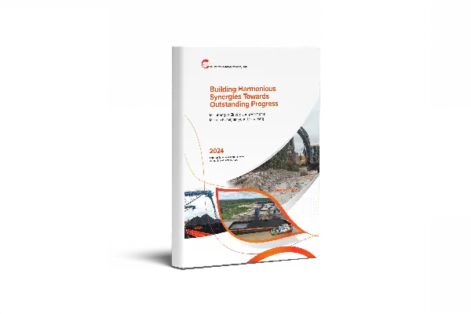
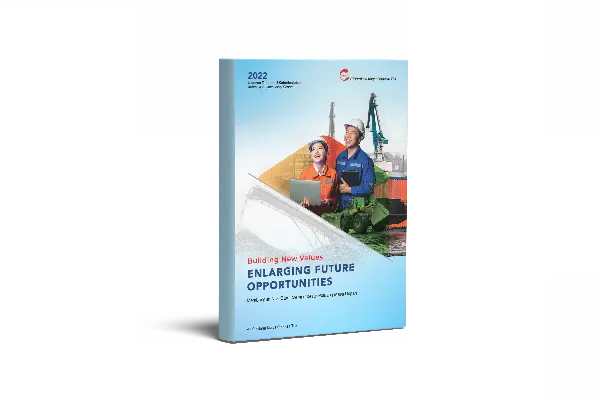
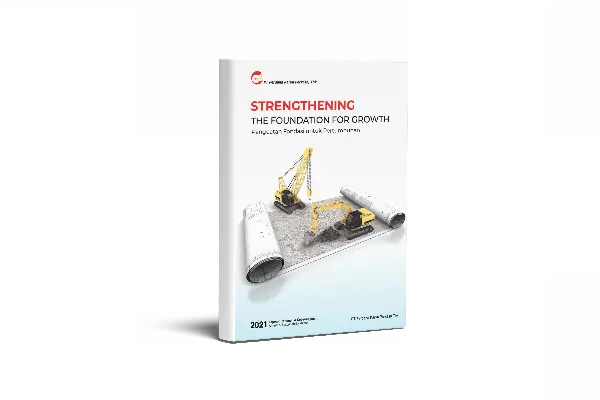

Pendapatan naik tiga kali lipat.Revenue tripled.
Angka konsolidasian 2025 dibandingkan 2024, dalam miliar rupiah. Bar abu-abu 2024, bar merah 2025.Consolidated 2025 figures against 2024, in billions of rupiah. Grey bar 2024, red bar 2025.
- PendapatanRevenue
- Rp749,4 MRp749.4 bn2024: Rp244,8 M2024: Rp244.8 bn
- Laba brutoGross profit
- Rp216,3 MRp216.3 bn2024: Rp93,2 M2024: Rp93.2 bn
- Laba ke pemilik entitas indukIncome to owners of the parent
- Rp38,6 MRp38.6 bn2024: Rp6,6 M2024: Rp6.6 bn
- Total asetTotal assets
- Rp627,9 MRp627.9 bn2024: Rp604,8 M2024: Rp604.8 bn
- Total ekuitasTotal equity
- Rp311,7 MRp311.7 bn2024: Rp256,2 M2024: Rp256.2 bn
- ROE
- 17,9%17.9%2024: 6,2%2024: 6.2%
Buka tabel lengkap dan rasioOpen the full table and ratios
| Pos (Rp miliar)Item (Rp billion) | FY2025 | FY2024 |
|---|---|---|
| Laba rugiProfit or loss | ||
| PendapatanRevenue | 749,4749.4 | 244,8244.8 |
| Laba brutoGross profit | 216,3216.3 | 93,293.2 |
| Laba tahun berjalanIncome for the year | 55,755.7 | 15,915.9 |
| Laba diatribusikan ke pemilik entitas indukIncome attributable to owners of the parent | 38,638.6 | 6,66.6 |
| Total laba komprehensifTotal comprehensive income | 55,655.6 | 16,116.1 |
| Laba per saham (Rp penuh)Earnings per share (full Rp) | 32,1632.16 | 5,505.50 |
| Posisi keuanganFinancial position | ||
| Total asetTotal assets | 627,9627.9 | 604,8604.8 |
| Total liabilitasTotal liabilities | 316,2316.2 | 348,7348.7 |
| Total ekuitasTotal equity | 311,7311.7 | 256,2256.2 |
| RasioRatios | ||
| Marjin laba brutoGross margin | 28,9%28.9% | 38,1%38.1% |
| Marjin laba bersihNet margin | 7,4%7.4% | 6,5%6.5% |
| ROA | 8,9%8.9% | 2,6%2.6% |
| ROE | 17,9%17.9% | 6,2%6.2% |
| Rasio lancarCurrent ratio | 0,37x0.37x | 0,50x0.50x |
| Liabilitas terhadap ekuitasDebt to equity | 1,01x1.01x | 1,36x1.36x |
| Liabilitas terhadap asetDebt to assets | 0,50x0.50x | 0,58x0.58x |
Laporan tahunan dan keuangan.Annual and financial reports.
Laporan keuangan 2025 tersedia di sini. Laporan tahunan dibuka di halaman laporan situs resmi. Geser ke samping untuk tahun sebelumnya.The 2025 financial statements are here. Annual reports open on the official reports page. Scroll sideways for earlier years.

Laporan Tahunan 20242024 Annual Report Laporan Tahunan 20232023 Annual Report
Laporan Tahunan 20232023 Annual Report

Laporan Tahunan 20222022 Annual Report
Laporan Tahunan 20212021 Annual ReportLaporan Tahunan 2025 dan laporan keuangan tengah tahunan 2026:2025 Annual Report and 2026 interim financial statements: MenyusulTo follow
Struktur grup.Group structure.
Jalur kepemilikan dari Perseroan ke entitas anak yang menjalankan tambang.The ownership path from the Company to the subsidiary that runs the mine.
- Entitas induk · JakartaParent company · JakartaPT Paragon Karya Perkasa Tbk
- 99,94% kepemilikan langsung99.94% direct ownershipPT Bhakti Harapan Sejahtera
Konsultasi manajemen, JakartaManagement consulting, Jakarta
- 70% kepemilikan tidak langsung melalui BHS70% indirect ownership through BHSPT Tri Oetama Persada
Pertambangan batubaraCoal mining
Sumber: Catatan 1c Laporan Keuangan 2025. Perusahaan asosiasi dan ventura bersama: tidak tercatat.Source: Note 1c of the 2025 financial statements. Associates and joint ventures: none recorded.
Daftar periksa RUPS.GMS checklist.
Enam jenis dokumen yang wajib tersedia untuk setiap Rapat Umum Pemegang Saham.Six document types required for every General Meeting of Shareholders.
- Pengumuman RUPSGMS announcement
Rencana penyelenggaraan dan mata acara.Meeting plan and agenda.
- Pemanggilan RUPSGMS notice
Undangan resmi kepada pemegang saham.Formal invitation to shareholders.
- Bahan mata acaraAgenda materials
Dokumen pendukung setiap mata acara.Supporting documents for each agenda item.
MenyusulTo follow - Riwayat hidup calonCandidate profiles
Calon anggota Direksi dan Dewan Komisaris.Candidates for the Boards.
MenyusulTo follow - Ringkasan risalahSummary of minutes
Hasil keputusan rapat. Arsip 2021 dan 2022 perlu dilengkapi.Meeting resolutions. The 2021 and 2022 archive needs completing.
- Tata tertib RUPSMeeting rules
Aturan penyelenggaraan dan pemungutan suara.Rules of conduct and voting.
MenyusulTo follow
Aksi korporasi.Corporate actions.
Dari yang terbaru. Prospektus dan keterbukaan informasi lengkap ada di situs resmi.Newest first. Prospectuses and the full disclosure archive are on the official site.
- Pengambilalihan PerseroanTakeover of the Company
Pengendalian beralih ke Resources Global Development Limited dan PT Deli Pratama Nusantara. Dokumen pengambilalihan dan penawaran tender (bila ada): menyusul.Control passed to Resources Global Development Limited and PT Deli Pratama Nusantara. Takeover and tender offer documents (if any): to follow.
- Perubahan namaChange of name
PT Perdana Karya Perkasa Tbk menjadi PT Paragon Karya Perkasa Tbk.PT Perdana Karya Perkasa Tbk became PT Paragon Karya Perkasa Tbk.
- PMHMETD IRights Issue I
Penambahan modal dengan hak memesan efek terlebih dahulu.Capital increase with pre-emptive rights.
- Penawaran umum perdanaInitial public offering
Penawaran 20,83% saham dan pencatatan di Bursa Efek Indonesia, Juli 2007.Offering of 20.83% of shares and listing on the Indonesia Stock Exchange, July 2007.
Arsip resmi:Official archive: Keterbukaan informasi dan siaran persDisclosures and press releases · Prospektus (IPO 2007, PMHMETD I 2023)Prospectuses (2007 IPO, 2023 Rights Issue I) · Dokumen RUPSGMS documents
Kontak investor.Investor contact.
- Sekretaris Perusahaan
- Corporate Secretary
- Fransiska Setiawan
- Alamat
- Address
- The Bellezza Permata Hijau, Office Tower Lt. 15, 15 OF-1, Jl. Letjen Soepeno No. 34, Jakarta Selatan 12210
- Email IR, faksimile, materi public expose
- IR email, fax, public expose materials
- MenyusulTo follow